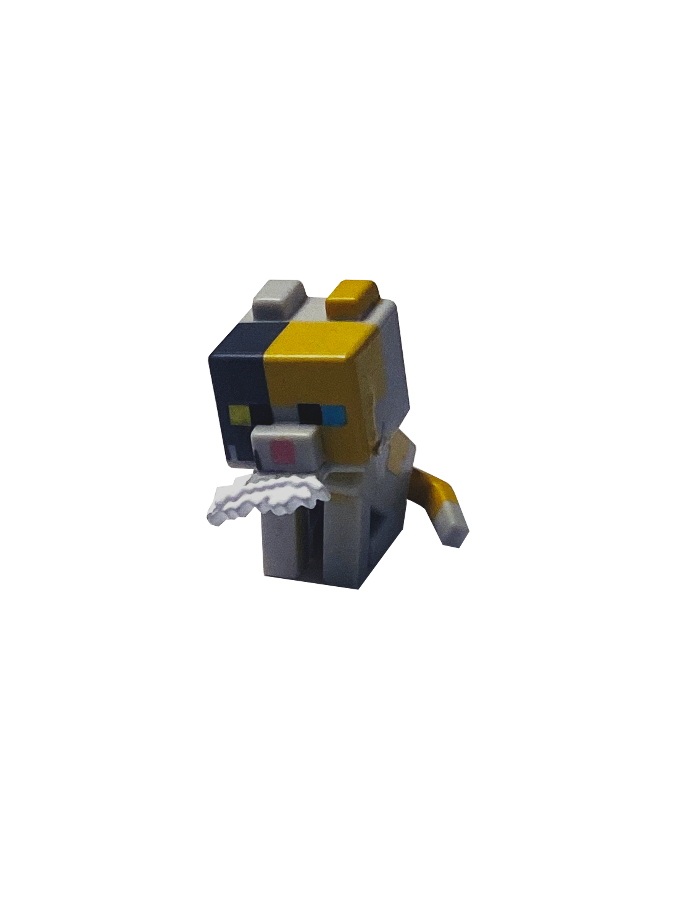
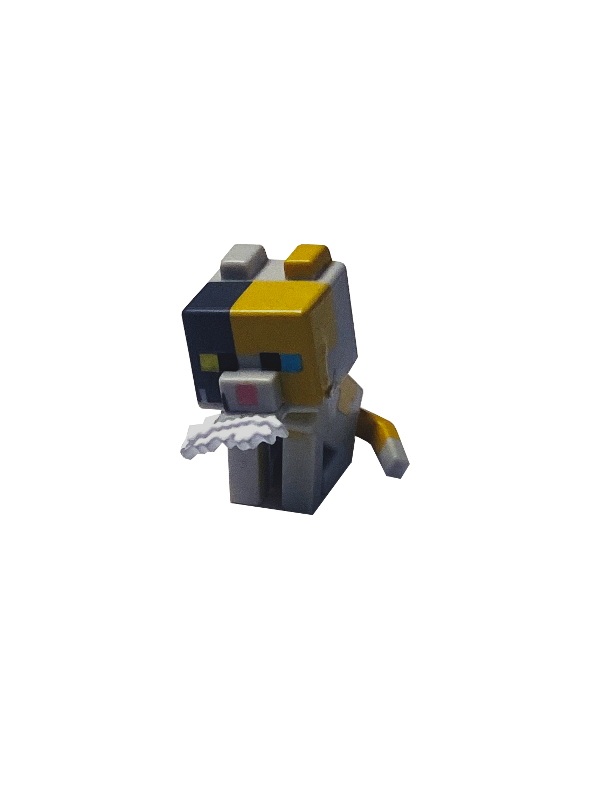
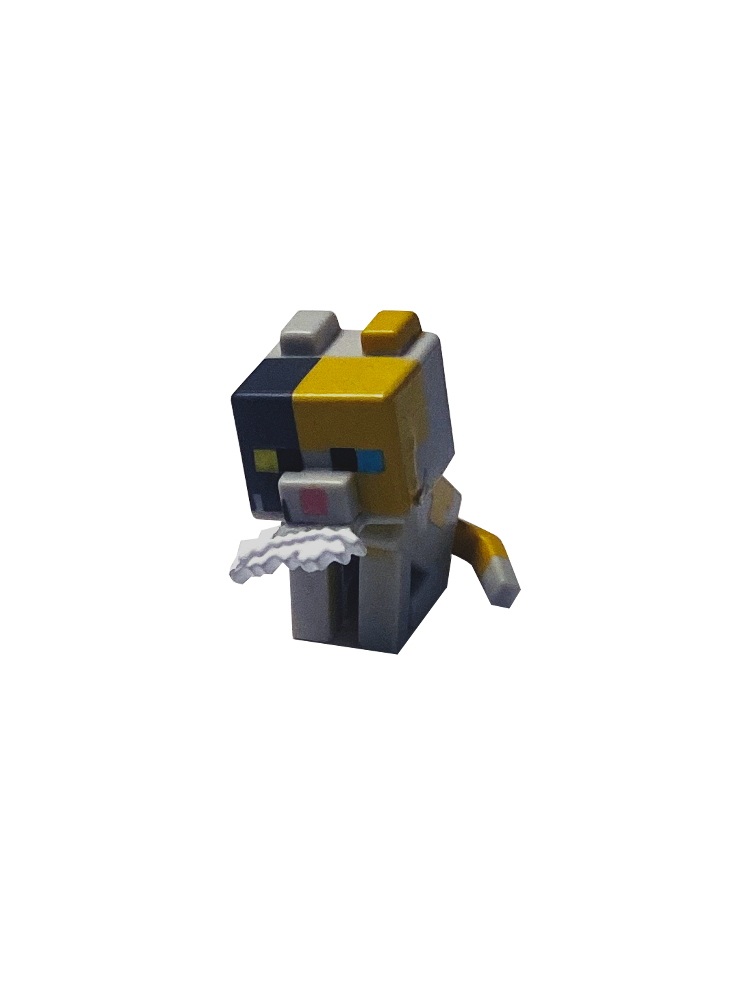
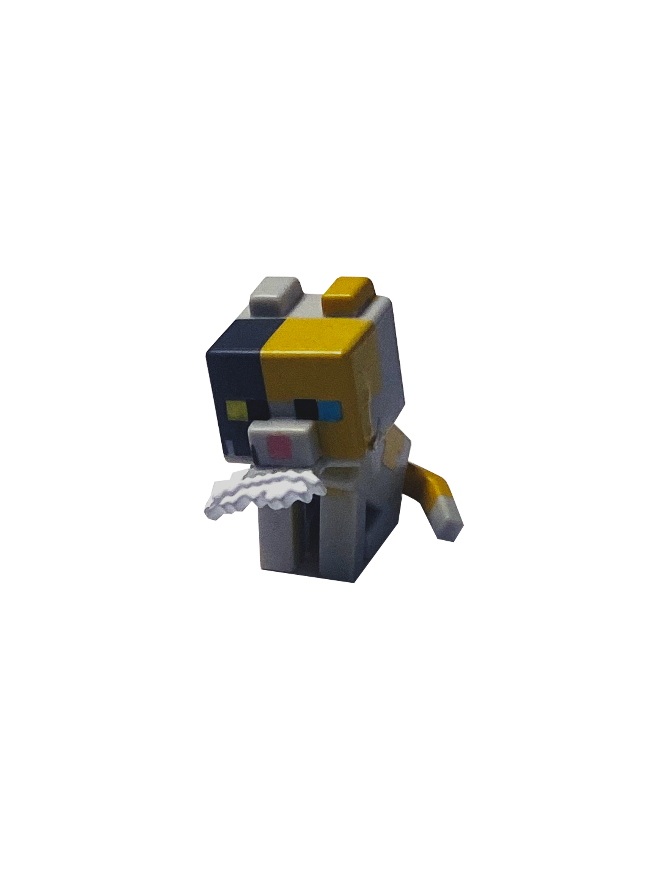

 
 Born from a block of slime, the orange squishy minecraft cat becomes a new prized member of the trinket collection. During my usual stops to target I always make a point to stop by the section by the check out with all the mystery bags, pokemon cards and gift cards. While on this specific target mission I checked the usual spot for any interesting mystery boxes when little pixels catch my eye. In the shape and design of a minecraft dirt block there is one lone mystery box on the very bottom shelf. I grab it and head straight for the check out with my roommate. We stand in line, my roommate trying to convince me to put it back, but I could not live with the guilt of leaving him there all alone. We finally leave the target, I rip open the box in the car freeing the mystery figure of its cold, dark, slime prison. The green slime sits inside a clear box to keep it from leaking through the cardboard. I crack it open and release the minecraft garfield. He looks up at me with the most kind little green eyes and I squish his little squishy head. I tuck my creeper protector away safely in the target bag and shift my attention over to the slime in the box. The whole ride home I find new ways to make funny noises with the slime, my favorite being the slime maraca where I close the lid and shake it around and listen to it gloop against all the acrylic sides of the cube. Honorable mention, this little calico minecraft kitty. He is holding a little feather as an offering for saving him from his little mystery box prison. Im not sure where I came across this minecraft feline. He sits on the shelf next to minecraft orange kitty, they are bestest friends forever.